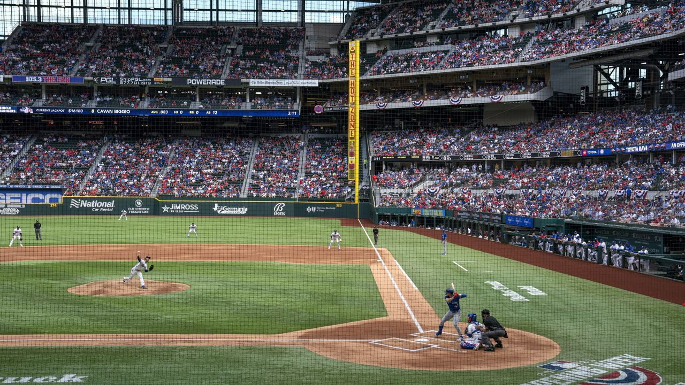
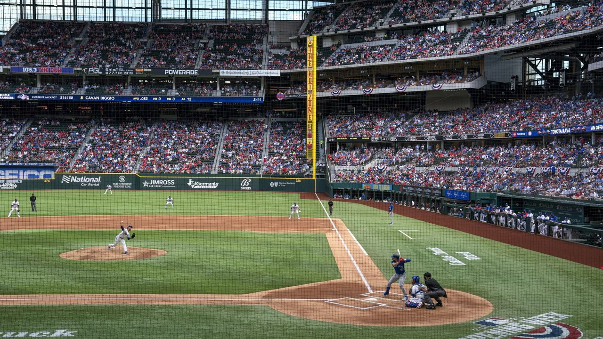

Home
 

Portfolio
This particular template goes not have a naviagation panel; it was intended for simple sites. I am also making a version of this template with navigation, check out This particular template goes not have a naviagation panel; it was intended for simple sites. I am also making a version of this template with navigation, check out This particular template goes not have a naviagation panel; it was intended for simple sites. I am also making a version of this template with navigation, check out This particular template goes not have a naviagation panel; it was intended for simple sites. I am also making a version of this template with navigation, check out This particular template goes not have a naviagation panel; it was intended for simple sites. I am also making a version of this template with navigation, check out This particular template goes not have a naviagation panel; it was intended for simple sites. I am also making a version of this template with navigation, check out This particular template goes not have a naviagation panel; it was intended for simple sites. I am also making a version of this template with navigation, check out BryantSmith.com to get it.
Prices
This particular template goes not have a naviagation panel; it was intended for simple sites. I am also making a version of this template with navigation, check out This particular template goes not have a naviagation panel; it was intended for simple sites. I am also making a version of this template with navigation, check out This particular template goes not have a naviagation panel; it was intended for simple sites. I am also making a version of this template with navigation, check out This particular template goes not have a naviagation panel; it was intended for simple sites. I am also making a version of this template with navigation, check out This particular template goes not have a naviagation panel; it was intended for simple sites. I am also making a version of this template with navigation, check out This particular template goes not have a naviagation panel; it was intended for simple sites. I am also making a version of this template with navigation, check out This particular template goes not have a naviagation panel; it was intended for simple sites. I am also making a version of this template with navigation, check out BryantSmith.com to get it.
Products
This particular template goes not have a naviagation panel; it was intended for simple sites. I am also making a version of this template with navigation, check out This particular template goes not have a naviagation panel; it was intended for simple sites. I am also making a version of this template with navigation, check out This particular template goes not have a naviagation panel; it was intended for simple sites. I am also making a version of this template with navigation, check out This particular template goes not have a naviagation panel; it was intended for simple sites. I am also making a version of this template with navigation, check out This particular template goes not have a naviagation panel; it was intended for simple sites. I am also making a version of this template with navigation, check out This particular template goes not have a naviagation panel; it was intended for simple sites. I am also making a version of this template with navigation, check out This particular template goes not have a naviagation panel; it was intended for simple sites. I am also making a version of this template with navigation, check out BryantSmith.com to get it.
FAQ
This particular template goes not have a naviagation panel; it was intended for simple sites. I am also making a version of this template with navigation, check out This particular template goes not have a naviagation panel; it was intended for simple sites. I am also making a version of this template with navigation, check out This particular template goes not have a naviagation panel; it was intended for simple sites. I am also making a version of this template with navigation, check out This particular template goes not have a naviagation panel; it was intended for simple sites. I am also making a version of this template with navigation, check out This particular template goes not have a naviagation panel; it was intended for simple sites. I am also making a version of this template with navigation, check out This particular template goes not have a naviagation panel; it was intended for simple sites. I am also making a version of this template with navigation, check out This particular template goes not have a naviagation panel; it was intended for simple sites. I am also making a version of this template with navigation, check out BryantSmith.com to get it.
Contact
This particular template goes not have a naviagation panel; it was intended for simple sites. I am also making a version of this template with navigation, check out This particular template goes not have a naviagation panel; it was intended for simple sites. I am also making a version of this template with navigation, check out This particular template goes not have a naviagation panel; it was intended for simple sites. I am also making a version of this template with navigation, check out This particular template goes not have a naviagation panel; it was intended for simple sites. I am also making a version of this template with navigation, check out This particular template goes not have a naviagation panel; it was intended for simple sites. I am also making a version of this template with navigation, check out This particular template goes not have a naviagation panel; it was intended for simple sites. I am also making a version of this template with navigation, check out This particular template goes not have a naviagation panel; it was intended for simple sites. I am also making a version of this template with navigation, check out BryantSmith.com to get it.